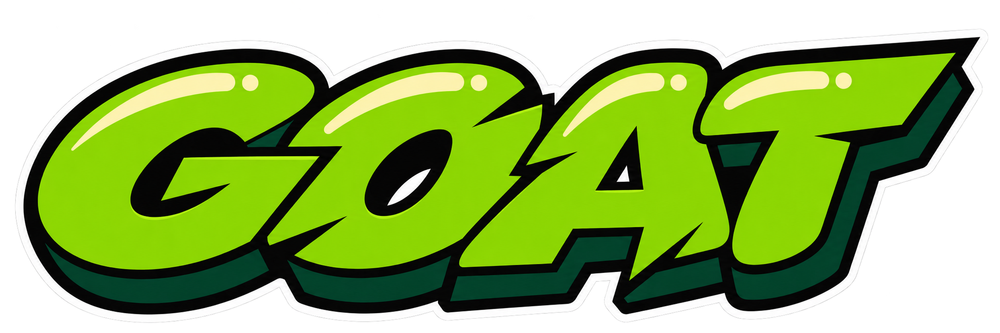
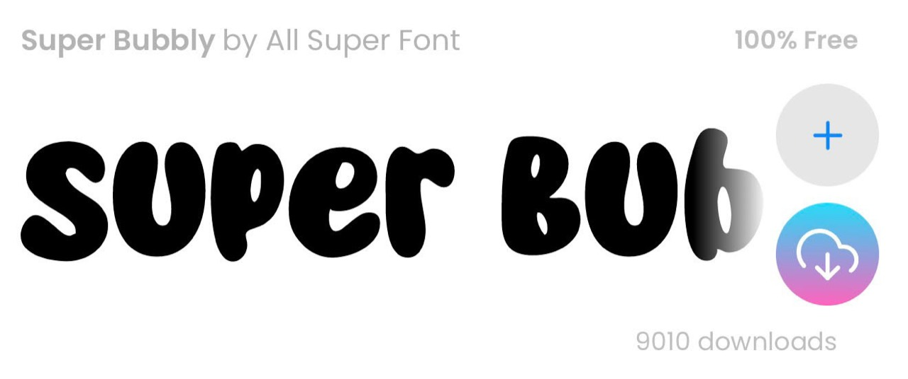
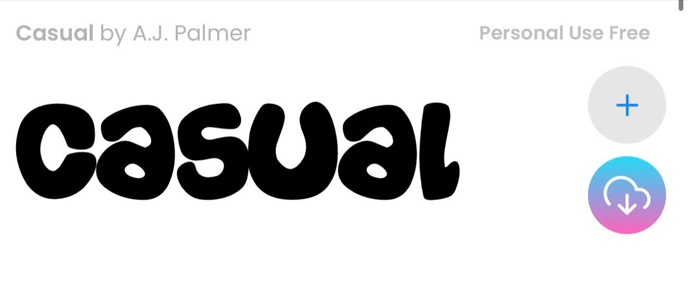
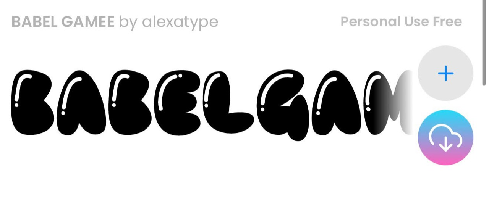

GOAT / TEXT LOGO
Project dashboard
Discovery notes
02 / 04 COMPLETE
- 01
Payment confirmed$75 received. The GOAT text-logo project is active.
DONE
- 02
Discovery call completeWorking notes cover merch use, green, Philadelphia influence, and bubbly lettering. The final direction is not approved yet.
DONE
- 03
Street lettering round ready.Three new directions change the letter shapes, stance, and rhythm while keeping Concept B's colors.
REVIEW
- 04
Review, refinement, and final filesThe selected direction will be refined for shirts, merch, and future clothing use.
LATER
Latest update
Discovery call completedAnisa confirmed the logo is for merch and a future clothing line.
Three references receivedSuper Bubbly, Casual, and Babel Gamee were added to the project files.
First concept batch postedThree green GOAT wordmarks are ready for Anisa to compare.
Concept B selectedThree white-border variations were added for the final direction review.
Street lettering round addedThree new versions change the lettering with more movement, sharper cuts, and hand-drawn rhythm.
Street lettering variations
These versions change the actual GOAT letter shapes while preserving the lime, forest, black, and white color system.
VARIATION B4Rising streetA tilted upward stance, cut-in accents, and motion strokes create a more active streetwear mark.
Open variation

VARIATION B5Sharp streetWider letters, angular cuts, and a forward stance make this the strongest and most aggressive option.
Open variation
VARIATION B6Handstyle flowUneven letter heights and the integrated underline give this version the most hand-drawn personality.
Open variation
Border variations
These earlier versions keep the original lettering and only change the white contrast treatment.
VARIATION B1Clean white borderA medium white contour keeps the original shape clear and adds contrast on dark shirts.
Open variation
VARIATION B2Bold white borderA stronger white contour and black edge give the mark more weight for statement pieces.
Open variation
VARIATION B3White badgeThe fullest white treatment. It reads like a merchandise patch and works on more garment colors.
Open variation
Original concept batch
Concept B was selected from this first round. These remain on file for project history.
CONCEPT ADeep green classicBalanced, clean, and flexible across shirts, labels, and future brand use.
Open concept
CONCEPT B / SELECTEDLime street puffThe chosen direction. Bright color and heavier depth give it strong streetwear energy.
Open concept
CONCEPT CGlossy fashion greenA polished treatment with more movement, contrast, and fashion-label character.
Open concept
Client references
These screenshots guided the rounded lettering direction. They are not production assets.

REFERENCE 01Super BubblyScreenshot label: 100% Free. Confirm commercial rights before production.
Open image

REFERENCE 02CasualScreenshot label: Personal Use Free. A commercial license is required for sold merchandise.
Open image

REFERENCE 03Babel GameeScreenshot label: Personal Use Free. A commercial license is required for sold merchandise.
Open image
Choose B4, B5, or B6.
The selected street-lettering direction will move into final refinement and production preparation.